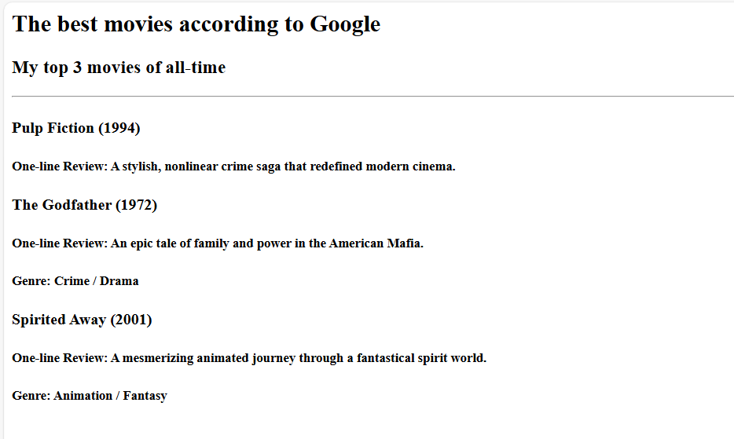

Portfolio.
Hello, It's Me
Shanmugapriya P
And I'm an Aspiring Software Developer
About me
- I possess strong technical skills in C and Java programming, with a keen interest in problem-solving and logical thinking. My web development knowledge includes proficiency in HTML and CSS, and I have basic experience with JavaScript
- To strengthen my foundation, I have completed several certifications, including Java Foundation, HTML and CSS Foundation, and Python Foundation from Infosys Springboard
Movie review

birthday invite

Skills
- Proficient in C Programming and Java Programming
- Web Development: HTML and CSS
- Strong problem-solving abilities
Other Info
contact details